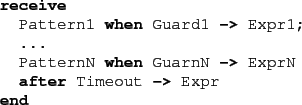

Next: Extensions Up: Introduction Previous: A Smallish Example Contents
The translator handles full Erlang, however there are a number
of issues involving the translation of the receive construct
of Erlang (see Section 2.2 for details).
Nevertheless a particular state space exploration algorithm
(see Section 3.2.2) may impose additional limitations.
Concretely the mce_alg_safety and
mce_alg_buechi model checking algorithms
(for checking safety and liveness properties respectively)
currently implements neither a real-time nor a discrete-time
semantics for Erlang. Instead, a receive statement
with a timeout clause

where Timeout is not infinity,
is considered to have a transition enabled whenever
there is no element in the process mailbox that matches any
pattern and guard. This treatment can be changed by setting
the option (see Section 3.1) @is_infinitely_fast@
to @true@;
then non-timeout transitions prohibit non-zero timeouts from occurring.
This corresponds to the assumption that the system is infinitely
fast compared to any timers set.
The simulation algorithm (mce_alg_simulation) does implement a real-time semantics.